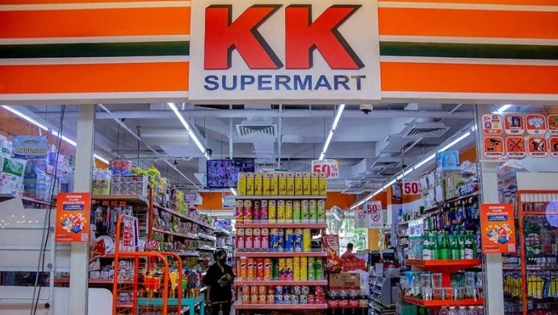

我有资格用KK Mart粉红表格吗？
不是每个KK Mart员工都有。招股书把合格人士定义为KK Mart的董事、符合董事部条件的集团员工，以及对集团有贡献的人士。有资格的人会收到粉红表格和一封信，写明保留给你的股数和申购方法。没收到信，一般代表你不在分配名单内，不确定的话可以问HR。
不在名单内？你仍然可以像其他大马人一样参加公众抽签。看怎样申购KK Mart IPO。
申购前要准备什么？
| 粉红表格分配信 | 写明你的配额、应付金额和截止时间。 |
|---|---|
| 本人名义的CDS户口 | 股份会存进这里。代名户口（包括一般的Rakuten Trade、Webull和Moomoo综合账户）不被接受。 |
| 申购款 | 股数 x 55仙。例子：5,000股 x RM0.55 = RM2,750。 |
| MyKad资料 | 名字和身份证号码必须和CDS户口完全一致。 |
没有本人名义的CDS户口？12月2日前怎样开
很多第一次用粉红表格的人就卡在这里。不少交易App开的是代名户口，股份登记在券商的代名公司名下，不能用来申购IPO。你需要的是直接CDS户口。我们知道最快的方法是Moomoo的CDS Account-IPO：
- 用优惠码 BURSA88 开Moomoo综合账户（在App内用MyKad完成eKYC）。
- 进入 账户 > 更多 > CDS Account-IPO，核对资料后提交。
- Moomoo表示通常在2个工作日内处理完毕。CDS Account-IPO是以你本人名义开立的直接CDS户口。
- 把这个CDS户口号码填进粉红表格，再按信件指示付款和提交。
其他方法：银行背景的券商或Bursa Anywhere App也可以开直接CDS户口，但截止日期很近，要先问清楚审批要多久。
12月2日前需要本人名义的CDS户口？
Moomoo的CDS Account-IPO是以你本人名义开立的直接CDS户口，在App内就能申请，Moomoo表示通常2个工作日内处理完毕。批准后可直接在App内申购马股IPO（只限大马公民）。注册时用优惠码 BURSA88，在Moomoo开户奖励（最高RM1,500，至2026年12月31日）之外，再多拿价值RM50至RM100的Apple股票。
用BURSA88开Moomoo户口 →粉红表格常见错误（会被拒）
- 用代名户口，而不是本人名义的CDS户口。
- 表格、MyKad和CDS户口上的名字不一致。
- 错过截止时间，迟交一般不被接受。
- 付错金额或没按信件指定的方式付款。
获分配后：卖出还是继续持有？
获分配的股份会在2026年12月15日上市前存入你的CDS户口。要卖出，你需要在该CDS户口所属券商有交易户口。如果用的是Moomoo的CDS Account-IPO，Moomoo表示IPO股份会在上市前转到你的综合账户，方便你直接交易。也请查看招股书和信件，看有没有适用于你的限制，例如董事身份。
该不该认购你的配额？
按55仙计算，KK Mart约18.8倍FY2026本益比，99 Speed Mart（5326）约38倍，而且KK Mart净利率和99 Speed Mart差不多。不过2026年7月至10月同店销售跌6%，香烟约占销售四分之一，2027年6月最低薪金也将调高至RM2,000。决定之前，先看对比表和申购前必须知道的事。
KK Mart 粉红表格常见问题
谁可以用KK Mart IPO粉红表格申购？
只有KK Mart邀请的合格人士：董事、符合董事部条件的员工，以及对集团有贡献的人士。他们会收到粉红表格和写明配额的信。
KK Mart粉红表格有多少股？
3,500万股新股以55仙零售价保留给合格人士。
可以用代名户口填KK Mart粉红表格吗？
不可以。申请必须用本人名义的CDS户口，代名户口不能用来申购IPO。
可以用Moomoo申购KK Mart粉红表格吗？
Moomoo的CDS Account-IPO是本人名义的直接CDS户口，可以把它的CDS号码填进粉红表格。表格本身按信件指示提交，不确定的话请向HR或发行处确认。
KK Mart粉红表格什么时候截止？
IPO申购于2026年12月2日（星期三）下午5点截止，请以你粉红表格信件上的截止时间为准。
我在KK Mart工作但没收到粉红表格，还能申购吗？
可以，像其他大马人一样参加公众抽签，通过参与银行或Moomoo App申购，前提是有本人名义的CDS户口。
什么时候会收到KK Mart股份？
获分配的股份会在KK Mart于2026年12月15日主板上市前存入你的CDS户口。
资料来源
- The Edge Malaysia, 26 Nov 2026: KK Mart sets Main Market IPO at 55 sen
- The Star, 26 Nov 2026: Main Market-bound KK Mart aims to raise RM115.5mil
- The Star, 16 Nov 2026: KK Mart signs retail underwriting deal with Maybank IB
- The Star, 19 Nov 2026: Valuation upside seen for KK Mart on expansion
- Securities Commission: KK Mart prospectus exposure
- iSaham IPO Insights: KK Mart Retail Berhad (key dates, Shariah status)
- Moomoo Malaysia Help Centre: How to open a CDS Account-IPO
- Moomoo Malaysia Help Centre: Malaysia IPO subscription
- Rakuten Trade FAQ: nominee account (IPO application)
- Business Today, 26 Nov 2026: KK Mart launches IPO (FY2026 results, same-store sales)
- The Edge, 26 Nov 2026: KK Mart targets 1,500 stores by June 2028 (SARA, dividend policy)
- Bernama, 13 Feb 2026: 99 Speed Mart FY2025 net profit RM614 million
- The Star, 17 Feb 2026: 99 Speed Mart to sustain robust growth (SARA outlets)
- 7-Eleven Malaysia quarterly report for the period ended 31 Dec 2025
- The Edge: 7-Eleven Malaysia store count and 2QFY2026 results
- iSaham: 99 Speed Mart Shariah status
- iSaham: 7-Eleven Malaysia Shariah status
- SoyaCincau, 9 Oct 2026: Budget 2027 SARA payouts
- Malay Mail, 9 Oct 2026: Minimum wage raised to RM2,000 from June 2027
- The Edge, 11 Nov 2026: Minimum wage rise applies to firms with sales above RM50 million